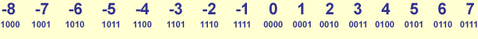
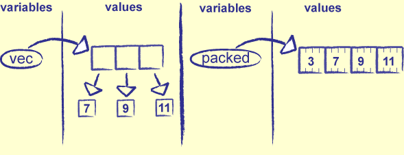

"Roll over" when going below zero, like a car's odometer
11112 is -110, 11102 is -210, etc.
10002 is the most negative 4-bit integer, 01112 the most positive

Figure 20.1: Two's Complement
Asymmetric: there is one more negative number than positive
Since there has to be room for 0 in the middle
Can still tell whether a number is positive or negative by looking at the first bit
6) Bitwise Operators
Name
Symbol
Purpose
Example
And
&
1 if both bits are 1, 0 otherwise
0110 & 1010 = 0010
Or
|
1 if either bit is 1
0110 | 1010 = 1110
Xor
^
1 if the bits are different, 0 if they're the same
0110 ^ 1010 = 1100
Not
~
Flip each bit
~0110 = 1001
Table 20.1: Bitwise Operators in Python
7) Bit Operator Examples
def format_bits(val, width=1):
'''Create a base-2 representation of an integer.'''
result = ''
while val:
if val & 0x01:
result = '1' + result
else:
result = '0' + result
val = val >> 1
if len(result) < width:
result = '0' * (width - len(result)) + result
return result
tests = [
[ 0, None, '0'],
[ 0, 4, '0000'],
[ 5, None, '101'],
[19, 8, '00010011']
]
for (num, width, expected) in tests:
if width is None:
actual = format_bits(num)
else:
actual = format_bits(num, width)
print '%4d %8s %10s %10s' % (num, width, expected, actual)
packed string: 'abcd'
as two 16-bit integers: 25185 25699
as a single 32-bit integer 1684234849
as a 32-bit float 1.67779994081e+22
26) Packing Variable-Length Data
How to store a variable-length vector of integers?
Store the number of elements in a fixed-size header
Then store that many integers one by one

Figure 20.8: Packing a Variable-Length Vector
Packing is easy:
def pack_vec(vec):
buf = struct.pack('i', len(vec))
for v in vec:
buf += struct.pack('i', v)
return buf
27) Unpacking Variable-Length Data
Unpacking is a little harder
Have to step up to the right location in the packed string on each pass through the unpacking loop
def unpack_vec(buf):
# Get the count of the number of elements in the vector.
int_size = struct.calcsize('i')
count = struct.unpack('i', buf[0:int_size])[0]
# Get 'count' values, one by one.
pos = int_size
result = []
for i in range(count):
v = struct.unpack('i', buf[pos:pos+int_size])
result.append(v[0])
pos += int_size
return result
28) Dynamic Formats
Problem: what if you want to pack strings, but don't know their length in advance?
Solution: create the format string on the fly, and save the string's length as well as its characters
def pack_strings(strings):
result = ''
for s in strings:
length = len(s)
format = 'i%ds' % length
result += struct.pack(format, length, s)
return result
29) Unpacking Dynamic Formats
Unpacking is the same as it was for vectors
def unpack_strings(buf):
int_size = struct.calcsize('i')
pos = 0
result = []
while pos < len(buf):
length = struct.unpack('i', buf[pos:pos+int_size])[0]
pos += int_size
format = '%ds' % length
s = struct.unpack(format, buf[pos:pos+length])[0]
pos += length
result.append(s)
return result
I.e., data that describes other data, such as the date it was collected, or its format
When creating binary files, put a header at the start of the file that describes the format of the data the file contains
Advantages:
One parser handles all data files
Can't lose the format: programs come and go, but data is forever
Disadvantages:
Slower (generality always is)
Reader is more complicated than a single special-purpose reader would be...
...but simpler than the sum of all the special-purpose readers you'd have to write...
...and you only have to debug it once
31) Metadata File Structure
Files have a three-part structure:
Integer (fixed size) recording the length of the metadata
Metadata (N bytes) describing the format of the records in the file
The records themselves
Figure 20.9: Structure of a Binary File With Metadata
32) Packing with Metadata
First step is to store a list of identically-structured records to a file
def store(outf, format, values):
'''Store a list of lists, each of which has the same structure.'''
length = struct.pack('i', len(format))
outf.write(length)
outf.write(format)
for v in values:
temp = [format] + v
binary = struct.pack(*temp)
outf.write(binary)
Notice how struct.pack is called
It takes each value to be packed as a separate argument, rather than taking a list of values
First argument has to be the format
So create a list with the format, and the values to be packed, and apply struct.pack to it
Common pattern when using variable number of arguments
33) Unpacking with Metadata
Second step is to unpack the bytes created by store
Read the size of the metadata, then the metadata, then the data
def retrieve(inf):
'''Retrieve data from a self-describing file.'''
data = inf.read(struct.calcsize('i'))
format_length = struct.unpack('i', data)[0]
format = inf.read(format_length)
record_size = struct.calcsize(format)
result = []
while True:
data = inf.read(record_size)
if not data:
break
values = list(struct.unpack(format, data))
result.append(values)
return result
Notice the assert in the reading loop
Defensive programming
34) Testing
Final step is to test that everything works
Just as important as steps 1 and 2
from cStringIO import StringIO
tests = [
['i', [[17]]],
['ii', [[17, 18]]],
['ii', [[17, 18], [19, 20], [21, 22]]],
['if', [[17, 18.0], [19, 20.0]]]
]
for (format, original) in tests:
storage = StringIO()
temp = store(storage, format, original)
storage.seek(0)
final = retrieve(storage)
assert original == final
Note that there's no output: tests should only ask for attention when something goes wrong
35) Summary
Binary data is to programming what chemistry is to biology
You don't want to spend any more time thinking at its level than you have to...
...but when you do have to, there's no substitute
Remember: libraries already exist to handle (almost) every binary format ever created
The easiest code to debug is the code you didn't actually have to write